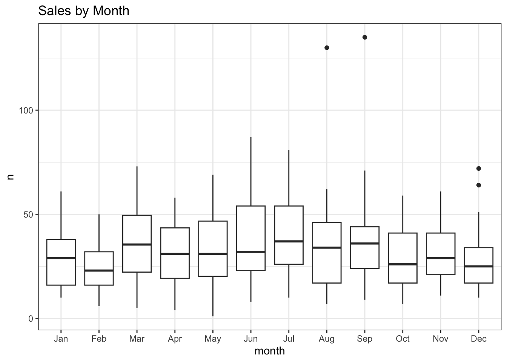

options(xts.warn_dplyr_breaks_lag = FALSE)
library(conflicted)
library(tidyverse)
conflict_prefer_all("dplyr", quiet = TRUE)
conflicts_prefer(purrr::map)
conflicts_prefer(lubridate::as_date)
library(scales)
library(glue)
library(SPARQL)
library(paletteer)
library(tsibble)
library(rvest)
library(imfr)
library(janitor)
library(corrr)
library(quantreg)
library(Qtools)
library(ggfx)
library(ggfoundry)
library(usedthese)
conflict_scout()An Infinite Number of Monkeys
R
web scraping
quantile regression
linear regression
rolling join
special effects
Quantile regression, property sales and anything could happen eventually

More on the monkeys later.
For now, the focus is on modelled house sales in London SW10 using quantile (and linear) regression. Several other “little projects” have looked at these residential properties from other perspectives:
House Sales and the impact of historical events.
Digging Deep and the correlation between sales and planning applications.
Bootstraps & Bandings and inferring whether property bands are as representative of property values today as they were three decades ago.
theme_set(theme_bw())
pal_name <- "wesanderson::Royal1"
pal <- paletteer_d(pal_name)
display_palette(pal, pal_name)House transaction data are provided by HM Land Registry Open Data.
endpoint <- "https://landregistry.data.gov.uk/landregistry/query"
query <- 'PREFIX text: <http://jena.apache.org/text#>
PREFIX ppd: <http://landregistry.data.gov.uk/def/ppi/>
PREFIX lrcommon: <http://landregistry.data.gov.uk/def/common/>
SELECT ?item ?ppd_propertyAddress ?ppd_hasTransaction ?ppd_pricePaid ?ppd_transactionCategory ?ppd_transactionDate ?ppd_transactionId ?ppd_estateType ?ppd_newBuild ?ppd_propertyAddressCounty ?ppd_propertyAddressDistrict ?ppd_propertyAddressLocality ?ppd_propertyAddressPaon ?ppd_propertyAddressPostcode ?ppd_propertyAddressSaon ?ppd_propertyAddressStreet ?ppd_propertyAddressTown ?ppd_propertyType ?ppd_recordStatus
WHERE
{ ?ppd_propertyAddress text:query _:b0 .
_:b0 <http://www.w3.org/1999/02/22-rdf-syntax-ns#first> lrcommon:postcode .
_:b0 <http://www.w3.org/1999/02/22-rdf-syntax-ns#rest> _:b1 .
_:b1 <http://www.w3.org/1999/02/22-rdf-syntax-ns#first> "( SW10 )" .
_:b1 <http://www.w3.org/1999/02/22-rdf-syntax-ns#rest> _:b2 .
_:b2 <http://www.w3.org/1999/02/22-rdf-syntax-ns#first> 3000000 .
_:b2 <http://www.w3.org/1999/02/22-rdf-syntax-ns#rest> <http://www.w3.org/1999/02/22-rdf-syntax-ns#nil> .
?item ppd:propertyAddress ?ppd_propertyAddress .
?item ppd:hasTransaction ?ppd_hasTransaction .
?item ppd:pricePaid ?ppd_pricePaid .
?item ppd:transactionCategory ?ppd_transactionCategory .
?item ppd:transactionDate ?ppd_transactionDate .
?item ppd:transactionId ?ppd_transactionId
OPTIONAL { ?item ppd:estateType ?ppd_estateType }
OPTIONAL { ?item ppd:newBuild ?ppd_newBuild }
OPTIONAL { ?ppd_propertyAddress lrcommon:county ?ppd_propertyAddressCounty }
OPTIONAL { ?ppd_propertyAddress lrcommon:district ?ppd_propertyAddressDistrict }
OPTIONAL { ?ppd_propertyAddress lrcommon:locality ?ppd_propertyAddressLocality }
OPTIONAL { ?ppd_propertyAddress lrcommon:paon ?ppd_propertyAddressPaon }
OPTIONAL { ?ppd_propertyAddress lrcommon:postcode ?ppd_propertyAddressPostcode }
OPTIONAL { ?ppd_propertyAddress lrcommon:saon ?ppd_propertyAddressSaon }
OPTIONAL { ?ppd_propertyAddress lrcommon:street ?ppd_propertyAddressStreet }
OPTIONAL { ?ppd_propertyAddress lrcommon:town ?ppd_propertyAddressTown }
OPTIONAL { ?item ppd:propertyType ?ppd_propertyType }
OPTIONAL { ?item ppd:recordStatus ?ppd_recordStatus }
}'
data_lst <- SPARQL(endpoint, query)I intend to model the data by year-month and project two months beyond the last recorded actuals.
data_df <- data_lst |>
pluck("results") |>
as_tibble() |>
mutate(
date = as_datetime(ppd_transactionDate) |> as_date(),
amount = ppd_pricePaid,
cat = str_remove(ppd_transactionCategory,
"<http://landregistry.data.gov.uk/def/ppi/"),
) |>
filter(str_detect(cat, "standard")) |>
arrange(date) |>
mutate(yr_mon = yearmonth(date)) |>
count(yr_mon)
next_month <- data_df |>
summarise(last(yr_mon) + 1) |>
pull()
# Add two months for predictions
data_df2 <- data_df |>
rows_insert(tibble(yr_mon = next_month), by = "yr_mon") |>
rows_insert(tibble(yr_mon = next_month + 1), by = "yr_mon")There are various sources available for macroeconomic factors that may affect house sales activity. Inflation and interest rates (the latter impacting mortgage rates) could be influential. SW10 has many overseas buyers, so the effective exchange rate versus a basket of currencies could too be a useful predictor.
# Price of a selection of goods & services for a typical consumer
cpi_df <- imf_dataset(
database_id = "CPI",
indicator = "PCPI_IX",
ref_area = "GB",
freq = "M",
start_year = 1990
) |>
mutate(yr_mon = yearmonth(date),
cpi_macro = as.double(value)) |>
select(yr_mon, cpi_macro)
# BOE base rate
interest_df <-
read_html("https://www.bankofengland.co.uk/boeapps/database/Bank-Rate.asp") |>
html_elements("#stats-table") |>
html_table() |>
pluck(1) |>
mutate(date = dmy(`Date Changed`)) |>
select(date, interest_macro = Rate) |>
arrange(date) |>
mutate(yr_mon = yearmonth(date)) |>
select(-date) |>
slice_tail(n = 1, by = yr_mon)
# Effective exchange rate of sterling versus multiple other currencies
url <-
str_c(
"https://www.bankofengland.co.uk/boeapps/database/",
"fromshowcolumns.asp?Travel=NIxAZxSUx&FromSeries=1&ToSeries=50&",
"DAT=ALL&",
"FNY=Y&CSVF=TT&html.x=66&html.y=26&SeriesCodes=", "XUDLBK67",
"&UsingCodes=Y&Filter=N&title=Quoted%20Rates&VPD=Y"
)
sterling_df <- read_html(url) |>
html_element("#stats-table") |>
html_table() |>
clean_names() |>
mutate(
date = dmy(date),
yr_mon = yearmonth(date)
) |>
rename(sterling_macro = 2) |>
summarise(sterling_macro = last(sterling_macro), .by = yr_mon)
macro_list <-
list(
cpi_df,
interest_df,
sterling_df
)
macro_df <- reduce(macro_list, left_join, join_by(yr_mon)) |>
arrange(yr_mon) |>
fill(ends_with("macro"), .direction = "down") |>
drop_na()
macro_df |>
pivot_longer(-yr_mon) |>
mutate(name = str_remove(name, "_macro")) |>
ggplot(aes(yr_mon, value)) +
geom_line(colour = "grey70") +
geom_smooth() +
facet_wrap(~name, scales = "free_y", nrow = 1) +
labs(title = "Macroeconomic Factors", x = NULL) +
theme(axis.text.x = element_text(angle = 45, hjust = 1))
The UK government imposes a stamp duty on house buyers as a percentage of the sale price, so changes in the rate, particularly the top rate, could be a helpful input to the model.
stamp_df <- read_html("https://www.investmentguide.co.uk/historical-stamp-duty/") |>
html_elements("strong , .column-1, .column-2") |>
html_text() |>
as_tibble() |>
filter(!value %in% c("Rate", "Charge band")) |>
mutate(type = case_when(
str_detect(value, "%") ~ "rate",
str_detect(value, "£") ~ "band",
.default = "date"
)) |>
mutate(yr_mon = if_else(type == "date", yearmonth(dmy(value)), NA)) |>
fill(yr_mon) |>
filter(type != "date") |>
mutate(row = row_number(), .by = c(yr_mon, type)) |>
pivot_wider(names_from = type, values_from = value) |>
separate_wider_delim(band, " and under ",
names = c("from", "to"), too_few = "align_start"
) |>
mutate(
to = if_else(str_starts(from, "Up to"), parse_number(from), parse_number(to)),
to = replace_na(to, Inf)
) |>
select(-from)
stamp_df2 <- stamp_df |>
filter(to == Inf) |>
select(yr_mon, stamp_macro = rate) |>
mutate(stamp_macro = parse_number(stamp_macro))
# saveRDS(stamp_df, "stamp_df")Scatter plots and correlations suggest these could be worth incorporating.
A further refinement would be to try the correlations at various lags to see where the relationship is strongest. This is because it often takes weeks from decision-to-sell to completion. On the other hand one can often get a broad sense of the direction of some of these factors ahead of time.
Months are included as, for example, there are typically weaker sales in winter.
join_df <- data_df2 |>
left_join(macro_df, join_by(yr_mon == yr_mon)) |>
left_join(stamp_df2, join_by(closest(yr_mon >= yr_mon))) |>
select(-starts_with("date"), -yr_mon.y) |>
mutate(across(ends_with("_macro"), lag, 2)) |>
drop_na(-n) |>
rename(yr_mon = yr_mon.x) |>
mutate(month = month(yr_mon))
join_df |>
mutate(month = month(yr_mon, label = TRUE)) |>
ggplot(aes(month, n, group = month)) +
geom_boxplot() +
labs(title = "Sales by Month")
join_df |>
select(-month) |>
correlate() |>
focus(n) |>
arrange(n)| term | n |
|---|---|
| cpi_macro | -0.6394982 |
| stamp_macro | -0.6098874 |
| interest_macro | 0.4988777 |
| sterling_macro | 0.5598381 |
join_df |>
pivot_longer(cols = ends_with("_macro"), names_pattern = "(.*)_macro") |>
ggplot(aes(value, n)) +
geom_point() +
geom_smooth(method = "lm") +
facet_wrap(~name, scales = "free_x", nrow = 1)The quantreg (Koenker 2022) R package is used here to model the 0.5 (median), 0.05 and 0.95 quantiles, Qtools (Geraci 2022) to extract the goodness-of-fit and broom (Robinson, Hayes, and Couch 2023) to tidy the term estimates.
set.seed(123)
rq_fit <- rq(
n ~ cpi_macro + sterling_macro + interest_macro +
stamp_macro + month + yr_mon,
data = join_df,
tau = c(0.05, 0.5, 0.95)
)
broom::tidy(rq_fit)| term | estimate | conf.low | conf.high | tau |
|---|---|---|---|---|
| (Intercept) | 34.9637770 | 2.5084044 | 51.5192997 | 0.05 |
| cpi_macro | 1.7368596 | 0.9750103 | 2.7228793 | 0.05 |
| sterling_macro | 0.3613259 | 0.1910106 | 0.6904453 | 0.05 |
| interest_macro | -3.3873224 | -5.4895894 | -2.1548889 | 0.05 |
| stamp_macro | 0.3955557 | -0.5174484 | 1.1546665 | 0.05 |
| month | 0.4243359 | -0.1641574 | 0.8630339 | 0.05 |
| yr_mon | -0.0139605 | -0.0198758 | -0.0090087 | 0.05 |
| (Intercept) | -3.5142925 | -31.4504914 | 14.3832173 | 0.50 |
| cpi_macro | 0.9597555 | 0.4330227 | 1.5994709 | 0.50 |
| sterling_macro | 0.7940372 | 0.5853182 | 0.9814400 | 0.50 |
| interest_macro | -2.0952914 | -3.8808015 | -0.7101136 | 0.50 |
| stamp_macro | -0.5780211 | -1.3335191 | 0.2582064 | 0.50 |
| month | 0.0315507 | -0.3676512 | 0.3889651 | 0.50 |
| yr_mon | -0.0076878 | -0.0146556 | -0.0042168 | 0.50 |
| (Intercept) | 30.0593107 | -38.4713831 | 120.2971361 | 0.95 |
| cpi_macro | 1.4210843 | -1.4279209 | 2.3890940 | 0.95 |
| sterling_macro | 1.1880504 | -0.0562413 | 1.7142605 | 0.95 |
| interest_macro | -4.0633879 | -9.8616286 | 5.9937923 | 0.95 |
| stamp_macro | 1.7088722 | -4.9211859 | 5.0026191 | 0.95 |
| month | -0.0877162 | -1.3509206 | 1.8282363 | 0.95 |
| yr_mon | -0.0145373 | -0.0221361 | 0.0082073 | 0.95 |
GOFTest(rq_fit)Goodness-of-fit test for quantile regression based on the cusum process
A large test statistic (small p-value) is evidence of lack of fit
Quantile 0.05: Test statistic = 0.0018; p-value = 0.42
Quantile 0.5: Test statistic = 0.0068; p-value = 0.77
Quantile 0.95: Test statistic = 0.002; p-value = 0.51 lm_fit <- rq(
n ~ cpi_macro + sterling_macro + interest_macro +
stamp_macro + month + yr_mon,
data = join_df
)
rq_preds <- rq_fit |>
predict(join_df,
type = "quantiles",
quantiles = c(0.05, 0.5, 0.95)
) |>
as_tibble() |>
rename(
lower = `tau= 0.05`,
median = `tau= 0.50`,
upper = `tau= 0.95`
) |>
bind_cols(join_df) |>
mutate(coverage = if_else(between(n, lower, upper), TRUE, FALSE))
lm_preds <- lm_fit |>
predict(join_df) |>
as_tibble() |>
bind_cols(join_df) |>
select(yr_mon, lm = value)The goodness-of-fit seems reasonable, so let’s visualise the quantile and linear regressions along with the actual sales for comparison.
coverage <- rq_preds |>
summarise(coverage = percent(mean(coverage, na.rm = TRUE), 0.1)) |>
pull()
rq_preds |>
left_join(lm_preds, join_by(yr_mon == yr_mon)) |>
ggplot(aes(yr_mon, median)) +
as_reference(geom_ribbon(aes(ymin = lower, ymax = upper),
fill = pal[1]), id = "ribbon") +
with_blend(
annotate(
"rect",
xmin = ymd("2024-05-31"), xmax = ymd("2024-07-31"),
ymin = -Inf, ymax = Inf, fill = pal[2], linetype = "dashed"
),
bg_layer = "ribbon", blend_type = "atop"
) +
geom_line(aes(y = n), colour = "black") +
geom_line(colour = "white", linewidth = 1) +
geom_line(aes(y = lm), colour = pal[4], linetype = "dashed") +
geom_vline(xintercept = ymd("2008-09-06"),
linetype = "dashed", colour = "grey30") +
annotate("label",
x = yearmonth("2008 Sep"), y = 100,
label = "Lehman\nBrothers\nCollapses", size = 3
) +
geom_vline(xintercept = ymd("2014-12-03"),
linetype = "dashed", colour = "grey30") +
annotate("label",
x = yearmonth("2014 Dec"), y = 100,
label = "Jump in\nTop-rate\nStamp\nDuty", size = 3
) +
geom_vline(xintercept = ymd("2016-06-23"),
linetype = "dashed", colour = "grey30") +
annotate("label",
x = yearmonth("2016 Jun"), y = 65,
label = "Brexit\nVote", size = 3
) +
annotate("label",
x = yearmonth("2020 Jun"), y = 120,
label = glue(
"Actual (Black)\nLinear (Dashed Orange)\n",
"Quantiles (Grey / White)\nPredicted (Red / White)"
),
size = 3
) +
annotate("label",
x = yearmonth("1999 Jan"), y = 125,
label = glue("{coverage} Coverage"),
size = 3, fill = pal[1], colour = "white"
) +
scale_x_yearmonth(date_breaks = "2 years") +
labs(
title = "Monthly House Sales in London Postcode Area SW10",
subtitle = "Quantile (0.05, 0.5, 0.95) & Linear Regression",
x = NULL, y = "Number of Sales", fill = NULL
) +
theme(axis.text.x = element_text(angle = 45, hjust = 1))
The 90% prediction interval (0.05 to 0.95 quantiles represented by the grey ribbon) covers 89.7% of the historical observations and suggests a 95% probability of no more than 26 sales in June.
Of course that means there is a one-in-twenty chance of more, and an even smaller chance of repeating the summer of 2003. Anything can happen eventually.
As Bob Newhart pointed out, an infinite number of monkeys given enough time, could one day type out all the great books! A wide prediction interval though would suggest gibberish. So, you might want to busy yourself with other things in the meantime.
R Toolbox
Summarising below the packages and functions used in this post enables me to separately create a toolbox visualisation summarising the usage of packages and functions across all posts.
used_here()| Package | Function |
|---|---|
| Qtools | GOFTest[1] |
| SPARQL | SPARQL[1] |
| base | as.double[1], c[5], library[16], list[1], mean[1], options[1], set.seed[1] |
| broom | tidy[1] |
| conflicted | conflict_prefer_all[1], conflict_scout[1], conflicts_prefer[2] |
| corrr | correlate[1], focus[1] |
| dplyr | across[1], arrange[4], between[1], bind_cols[2], case_when[1], count[1], filter[4], if_else[3], join_by[4], last[2], left_join[3], mutate[16], pull[2], rename[3], row_number[1], rows_insert[2], select[8], slice_tail[1], summarise[3] |
| ggfoundry | display_palette[1] |
| ggfx | as_reference[1], with_blend[1] |
| ggplot2 | aes[7], annotate[6], element_text[2], facet_wrap[2], geom_boxplot[1], geom_line[4], geom_point[1], geom_ribbon[1], geom_smooth[2], geom_vline[3], ggplot[4], labs[3], theme[2], theme_bw[1], theme_set[1] |
| glue | glue[2] |
| imfr | imf_dataset[1] |
| janitor | clean_names[1] |
| lubridate | as_date[1], as_datetime[1], dmy[3], month[2], ymd[5] |
| paletteer | paletteer_d[1] |
| purrr | pluck[2], reduce[1] |
| quantreg | rq[2] |
| readr | parse_number[3] |
| rvest | html_element[1], html_elements[2], html_table[2], html_text[1] |
| scales | percent[1] |
| stats | predict[2] |
| stringr | str_c[1], str_detect[3], str_remove[2], str_starts[1] |
| tibble | as_tibble[4], tibble[2] |
| tidyr | drop_na[2], fill[2], pivot_longer[2], pivot_wider[1], replace_na[1], separate_wider_delim[1] |
| tidyselect | ends_with[3], starts_with[1] |
| tsibble | scale_x_yearmonth[1], yearmonth[10] |
| usedthese | used_here[1] |
| xml2 | read_html[3] |
References
Geraci, M. 2022. “Qtools: Utilities for Quantiles.” https://cran.r-project.org/package=Qtools.
Koenker, Roger. 2022. “Quantreg: Quantile Regression.” https://CRAN.R-project.org/package=quantreg.
Robinson, David, Alex Hayes, and Simon Couch. 2023. “Broom: Convert Statistical Objects into Tidy Tibbles.” https://CRAN.R-project.org/package=broom.